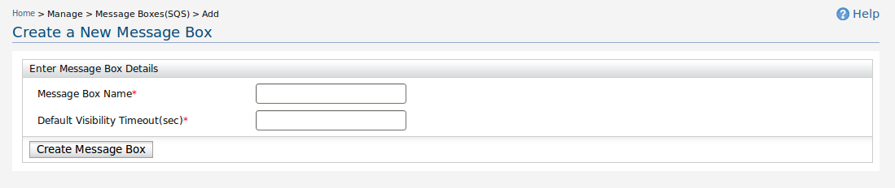
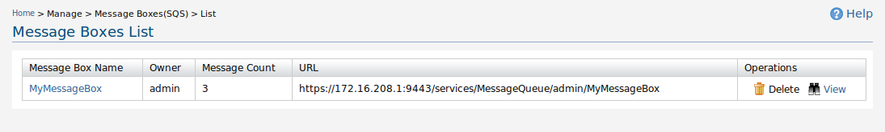
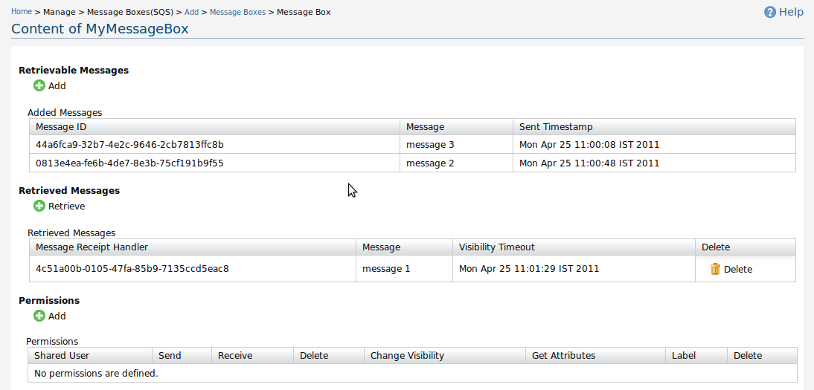

Figure 1: Access Keys
Message Boxes are providing Simple Queue Service(SQS). In SQS, Each user must have access keys. There are two access keys namely, Access Key Id and Secret Access Key. In each requests to SQS service, the request is signed with secret access key. And the access key id is included as a request parameter.
To get your access keys, you need to login to Message Broker product and access via Manage>Access Keys menu.

Figure 2: Create Message Box
Message boxes can be added with a name and a default visibility time out value.Message box name should contain only alpha numeric characters and no white spaces allowed.
In SQS, When a message is received by a user, that message is unaccessible for a specified time duration, and this message is not visible for other users till that specified time duration is over. If the message received user did not delete the message in that time duration, the message is visible for other users. This time duration is named as visibility timeout. When the message box is created, a default value for visibility timeout is set. This is named as default visibility timeout value.
When the message box is created with a suitable name and default visibility timeout value in seconds, available message box list is shown.

Figure 3: Message Boxes List
All the accessible message boxes are listed in message box list page. Message box can be shared with other users, and shared users are shown too. Number of messages in the message box is given.This number is the addition of retrievable messages and retrieved messages. URL of message box is used to access message box with various SQS operations.
Message box can be deleted and viewed in list view page as available operations.

Figure 4: View Message Box
View message box page contains three main sections namely retrievable messages, retrieved messages and permissions.
Messages can be sent to the message box. These messages can be retrieved if no one has retrieved. The retrievable messages are listed in this section.
Messages can be retrieved with a visibility timeout value. The retrived messages are locked for retrieved timeout period. User can delete retrieved messages during this timeout period. If message is deleted, it is not available to any user. But if the retrieved message is not deleted, it will be appear in retrievable message area when the visibility timeout is over
Message box can be shared with other users. There are five operations which can be allowed for others. A label for each permission is generated. That label is used to remove these allowed permissions.
There are set of operations in SQS API where user can access this service with SOAP requests. Change visibility timeout operation is not provided in management console.